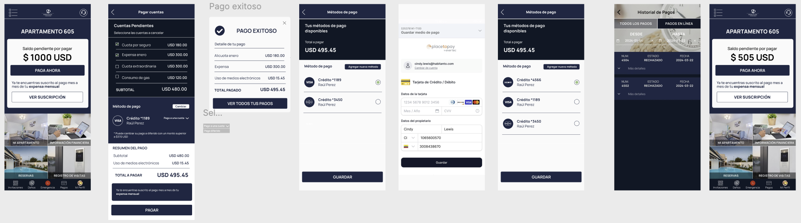

Escenario 1: "Suscripción activa, pago a una cuota (agregar más tarjetas)". De Home a la confirmación de pago, pasando por gestión de tarjetas guardadas.

Escenario 2: activar y desactivar la suscripción al pago automático, elegir la tarjeta para el cobro recurrente, y qué pasa si todavía no hay ninguna registrada.

Escenario 3: pagar una cuenta, gestionar los métodos de pago disponibles y revisar el historial con pagos rechazados y aprobados.